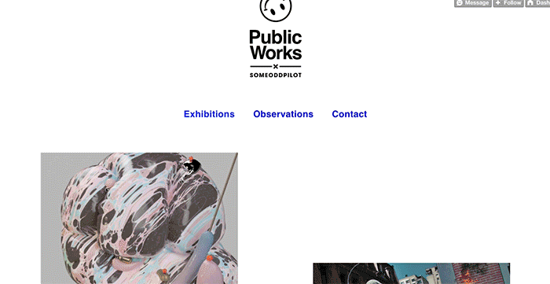
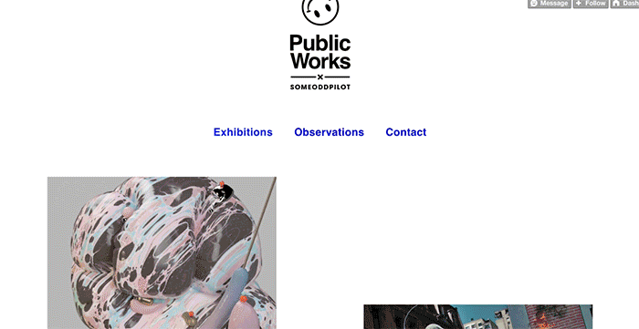

Violet Forest // ⍣٭⋆⋆⍣
⋆⋰⋆⍣٭⍣ scroll → ٭⋆⍣⋆⋰
⋆⋰⋆⍣٭⍣ scroll → ٭⋆⍣⋆⋰
Landing page for a WebGL Game, with crypto wallet integration.
Prototyped a follow feature, a price-hover feature, introduced the masonry layout, and coded the filter function for the primary/secondary market.
Developed a website with of a media-heavy double carousel of video clips, audio clips, and text for 50 different stories. The project was done in collaboration with the designers and creative directors of SOCIALDEVIANT, a creative digital agency in Chicago, Illinois.
I had the privilege to work in collaboration with the developers from agencies Someoddpilot and Branger Briz on the Patagonia Actionworks app.
I also worked with several other design studios in Chicago making landing pages for desktop and mobile sites.

 
